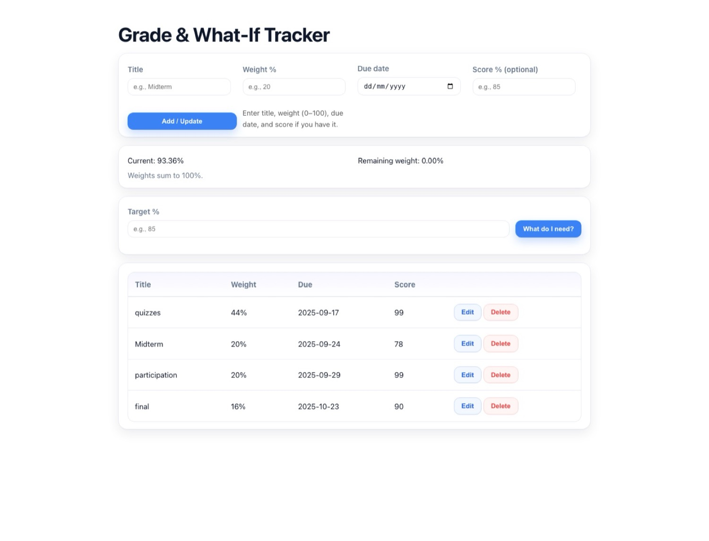
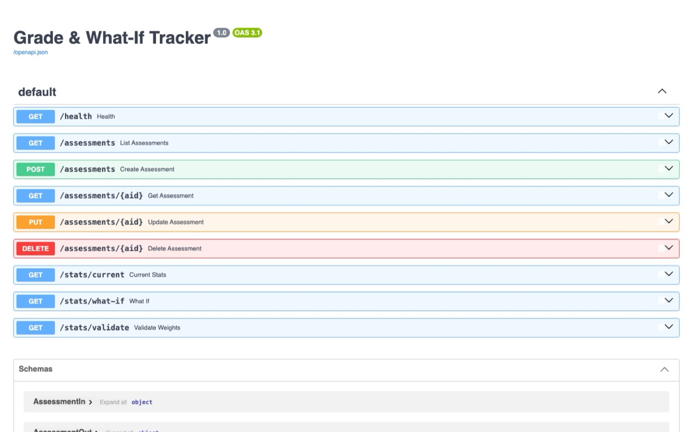

Full-stack — December 2025
Grade & What-If Tracker
Every student does this arithmetic on the back of an envelope before a final, and gets it wrong. The app tracks each assessment and its weight, computes the current weighted grade, shows how much weight is still unclaimed, and answers the actual question: to finish on 85, what do I need?
- Role
- Sole developer
- Backend
- FastAPI, Pydantic, SQLAlchemy, SQLite
- Deployment
- Docker to Railway
- Coverage gate
- 70% minimum, enforced in CI
Running, with real data

The line reading “Weights sum to 100%” is the validation endpoint reporting back. If the weights do not add up, the app says so rather than quietly computing a meaningless average — which is the single most common way a grade calculator lies to you.
Architecture
The brief asked for clean layering, and the shape of the code follows it. Routing, schemas, models, persistence and the grade arithmetic each live in their own module, so the calculation logic can be tested without a database and the database can change without touching the maths.
- Strict Pydantic validation at the boundary, so malformed input never reaches the calculation layer.
- A full CRUD REST API over assessments, plus statistics endpoints for the current grade, the what-if target and weight validation.
- The frontend is served by the same application, mounted as static files at the root, resolved relative to the backend package so it works regardless of where the server is launched from.
- Health checks and Prometheus metrics, so a deployed instance can actually be monitored.

Shipping
- GitHub Actions runs the pytest suite on every push.
- Coverage is gated at 70%, so the suite has to keep up with the code rather than decorating it.
- A Docker image deploys to Railway, with health checks wired up so a bad release is visible immediately.